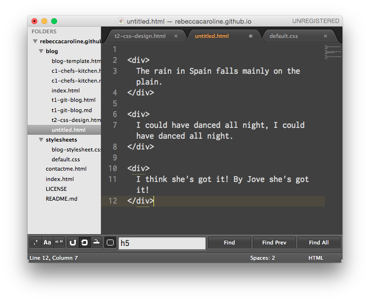
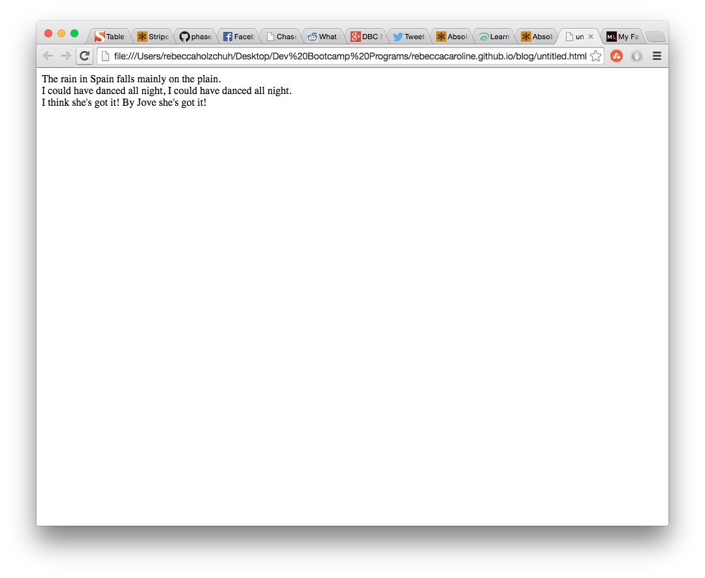
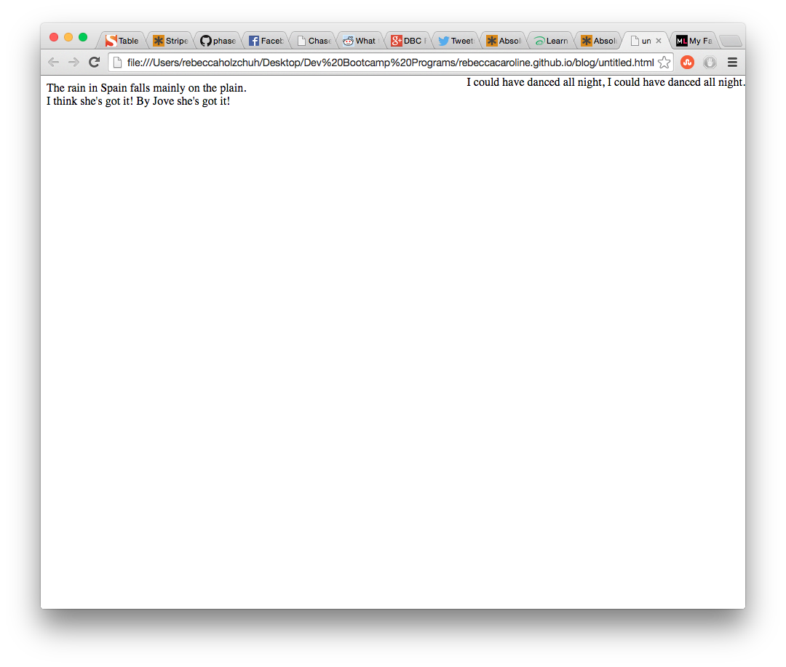
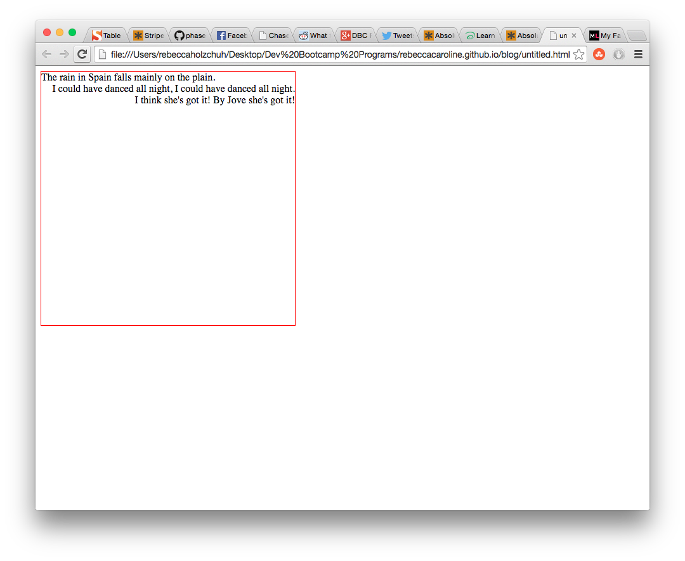

I chose to research fixed, absolute, and relative positioning because I just didn't get it this week. Reading the first article I found, I was even more confused."Huh?!?" I though. However, I dug and I dug and I did have an 'aha!' moment during my extensive research. so if you have a moment and want to learn, I can walk you a brief synopsis of what I discovered. The very first thing you have to learn is that every element on a web page is a block, which is web developer-speak for "a rectangle of pixels."
Static positioning is the default position of any block. In general you don't really have to worry about that, which is probably why this position was not in the prompt.
When you position a block 'absolutely,' you take it out of the web page and place it exactly where you want it. This means that you can move it on top of another element, and you can put it outside of the margins of the page's body. This also means that all of the blocks that were placed around the absolute element on the HTML page readjust themselves as if the absolute block were never there in the first place. For example, if you had three static blocks in an HTML page, the block that comes earlier in the HTML page would be seen above the other block on the web page like so:   However, if the middle block were positioned absolutely, you could move that block over like so:  and the other blocks would act like the absolute block wasn't even there.
Relative positioning makes it possible for blocks to move relative to where they otherwise would have been. Unlike absolute positioning, the other blocks don't readjust to the relative block. Here's an example, with the same blocks as before: As you can see, the other blocks didn't readjust, and because of this the relative block is on top of one of the static blocks. You have to be aware of this when using the relative position.
This is really cool, and this is where I had my 'aha!' moment. Basically, in an html page, you can have blocks inside of blocks. If you have one absolute block, and relative blocks INSIDE of the absolute block, you can make your relative blocks relative to the parent absolute block! Here's an example of blocks inside blocks (the parent block is absolute and the other blocks are relative): ! The two bottom sentences are right-aligned, but since they are relative to the parent block, they are only right-aligned to the border of the parent block.
Fixed positioning basically means that a block is fixed on the screen. If the user scrolls up or scrolls down, the block will not move from it's space on the screen. Take, for example, the header at twitter.com. Whether you scroll up or down or left or right, the header will always be found right underneath the search bar. This header has a fixed position.
I hope this explains the different positionings you can have for blocks in HTML and CSS! Please don't hesitate to contact me if you have sny more questions.
| Earlier | Home | Later |